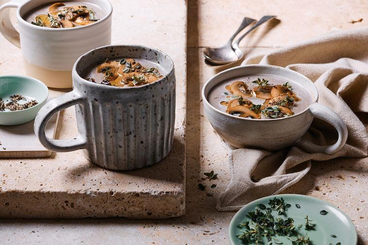

Mushroom Soup

"The earthy, umami magic of mushrooms stars in this rich and creamy soup,
which only takes around 30 minutes to get on the table."
INGREDIENTS
- 2 tbs extra virgin olive oil, plus extra to drizzle
- 1 onion, chopped
- 750g cup mushrooms, roughly chopped
- 2 garlic cloves, crushed
- 1L chicken stock
- 40g salted butter
- 200g Swiss brown mushrooms, sliced
- 125ml thickened cream, plus extra to serve
- Fresh thyme, to serve
METHOD
-
Heat oil in a large saucepan over medium-high heat. Add onion and
cook, stirring occasionally, for 5 minutes or until softened. Add cup
mushrooms. Cook, stirring for 5 minutes or until starting to soften.
Add garlic. Cook for 1 minute or until fragrant.
-
Add stock and season with salt flakes and freshly ground black pepper.
Bring to the boil. Reduce heat to low. Cover and simmer for 20 minutes
or until mushrooms are tender.
-
Meanwhile, melt half the butter in a large frypan over medium-high
heat. Cook half of the Swiss mushrooms for 5 minutes or until golden.
Transfer to a bowl. Repeat with remaining butter and Swiss mushrooms.
Set aside.
-
Using a stick blender, carefully blend soup until very smooth. Stir in
cream. Divide soup among serving bowls. Top with fried Swiss mushrooms
and drizzle with extra olive oil. Season with freshly ground black
pepper and serve sprinkled with thyme.